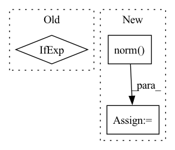

Pattern ID :19665
Before Change
// reconstruction loss
recon_loss_fn = F.mse_loss if self.l2_recon_loss else F.l1_loss
recon_loss = recon_loss_fn(fmap, img)
// lpipsAfter Change
last_dec_layer = self.decoders[-1].weight
norm_grad_wrt_gen_loss = grad_layer_wrt_loss(gen_loss, last_dec_layer).norm(p = 2)
norm_grad_wrt_perceptual_loss = grad_layer_wrt_loss(perceptual_loss, last_dec_layer).norm(p = 2)
adaptive_weight = safe_div(norm_grad_wrt_perceptual_loss, norm_grad_wrt_gen_loss)
// reconstruction loss
In pattern: SUPERPATTERN
Frequency: 4
Non-data size: 3
Instances Fragment ID: 64017312
Project Name: lucidrains/nuwa-pytorch
Commit Name: 0d206e967911dd7a7a3e8b827895f0a1e6ac5644
Time: 2022-01-03
Author: lucidrains@gmail.com
File Name: nuwa_pytorch/nuwa_pytorch.py
M Class Name: VQGanVAE
N Class Name: VQGanVAE
M Method Name: forward(4)
N Method Name: forward(4)
M Parent Class: nn.Module
N Parent Class: nn.Module
M File Name: nuwa_pytorch/nuwa_pytorch.py
N File Name: nuwa_pytorch/nuwa_pytorch.py
M Start Line: 183
M End Line: 212
N Start Line: 198
N End Line: 237
Before Change
self.register_buffer("mask", mask, persistent = False)
def forward(self, x, mask = None, use_triton = None):
use_triton = self.use_triton if use_triton is None else use_triton
n, device = x.shape[1], x.device
// embed token and add positional embeddingAfter Change
x = attn(x, mask = mask, use_triton = use_triton) + x
x = ff(x, use_triton = use_triton) + x
x = self.norm( x)
return self.to_logits(x)
Fragment ID: 64017313
Project Name: lucidrains/triton-transformer
Commit Name: 992e884661326fd328b6d39b84b88058dfa4d03f
Time: 2021-09-18
Author: lucidrains@gmail.com
File Name: triton_transformer/triton_transformer.py
M Class Name: Transformer
N Class Name: Transformer
M Method Name: forward(4)
N Method Name: forward(4)
M Parent Class: nn.Module
N Parent Class: nn.Module
M File Name: triton_transformer/triton_transformer.py
N File Name: triton_transformer/triton_transformer.py
M Start Line: 97
M End Line: 97
N Start Line: 122
N End Line: 146
Before Change
max_distance=max_distance,
)
max_distance -= 0.01
speed = 0.005 if self.gripper.check_grasp() else 0.01
for _ in (_ for j in path for _ in self.movej(j, speed=speed)):
yield
After Change
pybullet_planning.add_line(vec[0], vec[1], width=3)
v0 = [0, 0, -1]
v1 = vec[1] - vec[0]
v1 /= np.linalg.norm( v1)
angle = geometry.angle_between_vectors(v0, v1)
if angle > np.deg2rad(45):
continue
Fragment ID: 64017314
Project Name: wkentaro/safepicking
Commit Name: ed25ae6c9e356bdecb10ed9535e9be291be7ba8a
Time: 2021-04-08
Author: www.kentaro.wada@gmail.com
File Name: mercury/_pybullet/panda_robot_interface.py
M Class Name: PandaRobotInterface
N Class Name: PandaRobotInterface
M Method Name: random_grasp(3)
N Method Name: random_grasp(3)
M Parent Class:
N Parent Class:
M File Name: mercury/_pybullet/panda_robot_interface.py
N File Name: mercury/_pybullet/panda_robot_interface.py
M Start Line: 378
M End Line: 412
N Start Line: 324
N End Line: 410